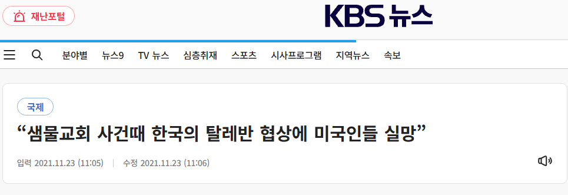
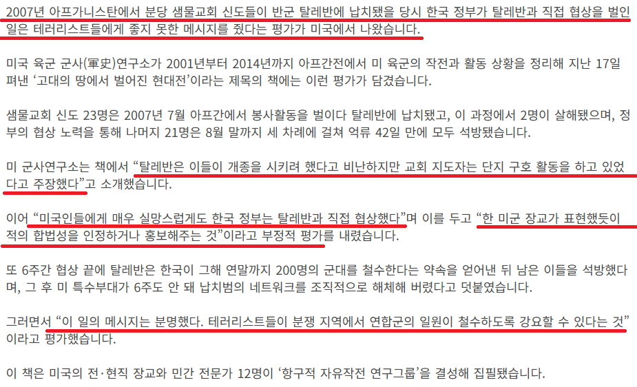
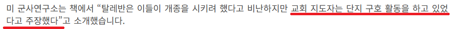
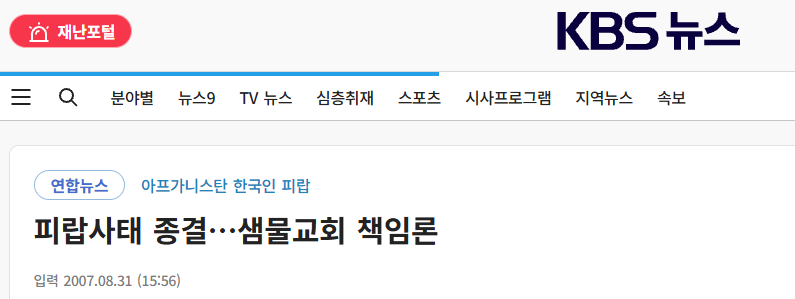
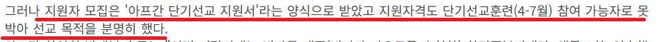
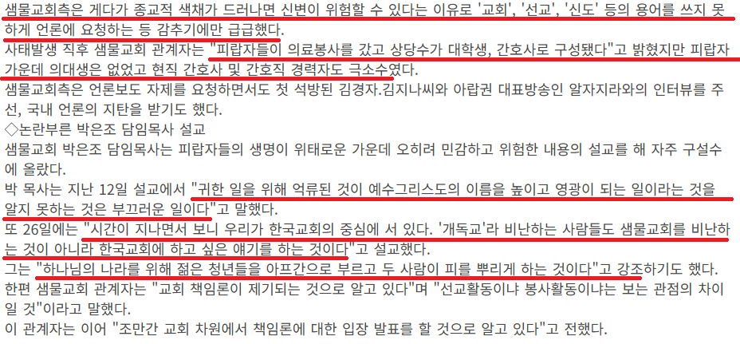
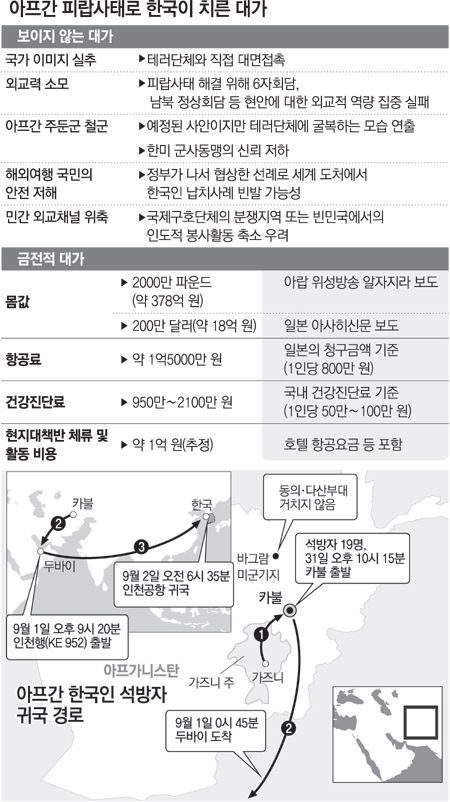
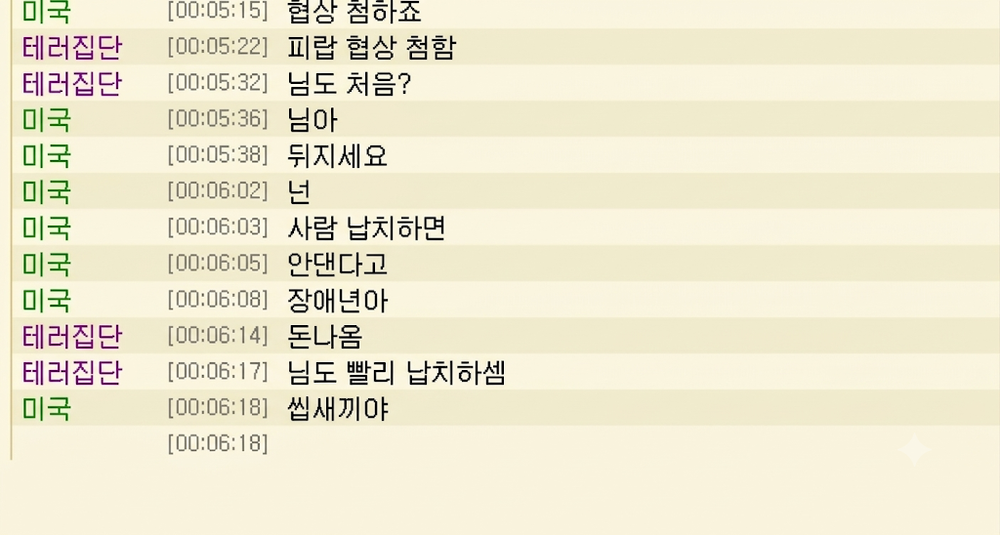

우선 이글은 정보만 끄적여도 양이 방대해 긴 글이 되다보니
개붕이 여러분의 너그러운 양해 부탁드립니다


미국은 “테러범과는 협상하지 않는다(No negotiations with terrorists)”는 오랜 원칙을 국가 안보 및 외교 정책의 핵심 기조로 유지하고 있음
특히 미국의 동맹국이 테러범들에게 인질이 잡힌다면
동맹국의 철수, 반미정서 등으로 이어질수도있고
한번 협상을 시작하면
테러를 보상하는 것이고 추가 납치를 부추기는 황금고블린 티켓이 될수있기때문
하지만 미국의 오랜원칙을 깬 사건이 있었으니
샘물교회 피랍 사건임
그당시에도 지금도 사람들 입에 오르내리며 샘물교회에 대한 부정적 이미지가 강한데
단순 미국이 실망해서일까??
아님

일단 탈레반이 빡칠만했음
탈레반 개쓰레기 새끼들 편을 드는게 아님
탈레반은 무슬림을 중심으로 결성된 이슬람 근본주의 무장 정치 조직임
그리고 샘물교회 피랍당시 어떤 상황이었냐면
미국-아프가니스탄 전쟁 중이었음
미국-아프가니스탄 전쟁의 시작은
2001년 9월 11일 발생한 9·11 테러로 부터 시작되는데
미국은 9·11테러의 배후인 알카에다의 수장 오사마 빈라덴을 내놓으라 했고
탈레반 정권이 비호하며 인도를 거무하여 미국의 침공이 시작됨
지금의 좆럼프처럼 매일매일 이겼다 졌다 비겼다 지랄하는 그런 전쟁이 아닌
2001년부터 2021년까지 약 20년 동안 이어진 미국 역사상 최장기 진짜 전쟁이었음
그러니까
무슬림을 중심으로 결성된 이슬람 근본주의 무장 정치 조직놈들에게
미국이 빈라덴 내놔라 라고 했고
좆까 씨발놈으로 맞받아 치며 전쟁을 하고있던 곳에
샘물교회가 선교 하러 간거임.......
다시 이짤로 돌아와서
당시 교회 지도자는 단지 구호활동만 했다! 라고 주장했다는데



그것도 아니었음
명백히 선교를 위해 간것이었음
서론이 존나 길어서 죄송함 이제부터 사건의 순서를 알아보겠음
1. 샘물교회 사건 이전 아프간에서 벌어진 외국인 피랍 사건은 4-5건에 달함
2. 탈레반이 수감동료 석방을 위해 한국인 납치를 계획하고 있다는 첩보도 입수된 상황
3. 2월 5일 '한국인 납치 위험이 있으니 여행을 자제해 달라'는 내용의 공문을 한민족복지재단 등 아프간 봉사활동단체에 보냄
4. 한민족복지재단은 샘물교회 박은조 담임목사가 이사장으로 있으며, 피랍자들은 비자발급이 어렵자 한민족복지재단 봉사대원 자격으로 비자를 발급 받음
5. 샘물교회는 아프간 여행 자제공문에도 불구하고 4월 1일까지 아프간 봉사대원을 모집함
6. 지원자 모집은 '아프간 단기선교 지원서'라는 양식으로 받았고 지원자격도 단기선교훈련(4-7월) 참여 가능자로 못박아 선교 목적을 분명히 함
7. 대한민국 외교부는 선교단 출국 전 "납치 위험이 있으니 여행을 자제해달라"는 공문을 보내고 출구를 만류함
8. 인천국제공항에는 '아프간 여행 자제 요망' 안내판이 걸려 있었으나, 이들은 그 앞에서 기념사진을 촬영한 뒤 출국을 강행
9. 샘물교회 봉사단원들은 전세버스로 고속도로를 이용, 카불에서 칸다하르로 이동하던 중 가즈니 주(州) 카라바그 지역(카불 남쪽 175㎞지점)에서 납치당함
10. 피랍 당시 경찰의 호위를 받지 않고 있었으며 탈레반의 공격이 잦은 카불-칸다하르간 고속도로를 통해 이동할 것이라는 계획도 경찰에 통지하지 않음
11. 신변안정이 보장되지 않는 고속도로로 이동 + 현지인 버스가아닌 호화로운 전세버스를 이용 = 우릴 납치해주세요
12. 피랍된 신도들이 매주 1-2차례 진행한 단기선교 훈련과정 프로그램에는 '단기선교 팀별 MT', '과정별 훈련 교육(마임, 인형극, 드라마 등)' 등이 있을 뿐 '안전교육'은 없었음
13. 피랍 직후 탈레반은 아프간에 주둔 중인 한국군의 즉각 철수와 수감 중인 탈레반 포로들의 맞교환을 석방 조건으로 요구함
14. 협상이 난항을 겪는 가운데, 탈레반은 7월 25일 인솔자인 배형규 목사를 살해하고 7월 30일에는 심성민 씨를 연이어 살해함
15. 사태가 걷잡을 수 없이 커지자 한국 정부는 국정원 요원 등을 투입해 국가가 테러 단체와 직접 대면 협상을 벌이는 초유의 사태가 벌어짐
16. 8월 13일 여성 인질 2명이 우선 풀려났고, 8월 28일 '한국군 연내 철수(이미 예정되어 있었음)' 및 '아프간 내 기독교 선교 활동 중지'를 조건으로 남은 인질 19명 전원 석방에 합의함. (이 과정에서 외신들은 한국 정부가 약 2천만 달러의 거액의 몸값을 지불했다고 보도했으나 정부는 공식 부인함)
17. 풀려난 피랍자들은 귀국하는 과정에서 환하게 웃으며 단체사진을 찍는 모습이 포착되어 엄청난 국민적 공분을 삼
18. 정부는 인질 이송을 위한 특별기 항공료, 시신 운구비, 현지 체재비 등 직접 비용 약 6천만 원을 샘물교회 측에 청구해 받아냈으나, 막대한 행정력 낭비와 외교적 손실 비용은 온전히 국가가 떠안게 됨
19. 결과적으로 정부가 수차례 경고하고 출국을 뜯어말렸음에도 '봉사'로 포장한 '위험지역 단기선교'를 강행하다 생명을 잃고 국가 망신과 세금 낭비를 초래한 최악의 민폐 사건으로 역사에 남음
20. 2010년 희생자 유족 측은 정부가 재외국민 보호 의무를 위반했고, 출국 제재나 여행 금지 조치를 제대로 하지 않았으며 피랍 후 구출 과정이 미흡했다며 국가를 상대로 약 3억 5천만 원의 손해배상 소송을 제기
21. 서울중앙지방법원은 정부에 배상 책임이 없다며 유족의 청구를 기각
22. 이후 관련 책들까지 냄
23. 이사건으로 인해 여권법 개정과 '여행금지국가' 제도 신설됨
요약이 길어 죄송합니다


이사건으로 인해
한국은 국제적 호구 황금고블린 타이틀을 획득했고
국제적 망신을 당함
이글은 놀랍게도 샘물교회 사건을 다룬
KBS 기사들의 내용에서 가져온 사실기반의 정보입니다
테러리스트랑 협상은 없음